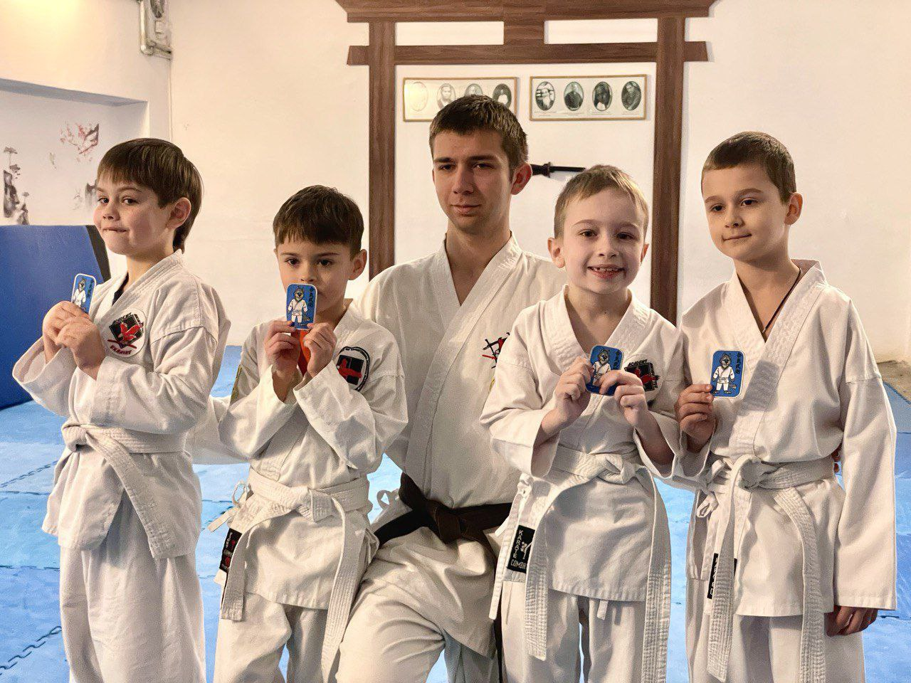
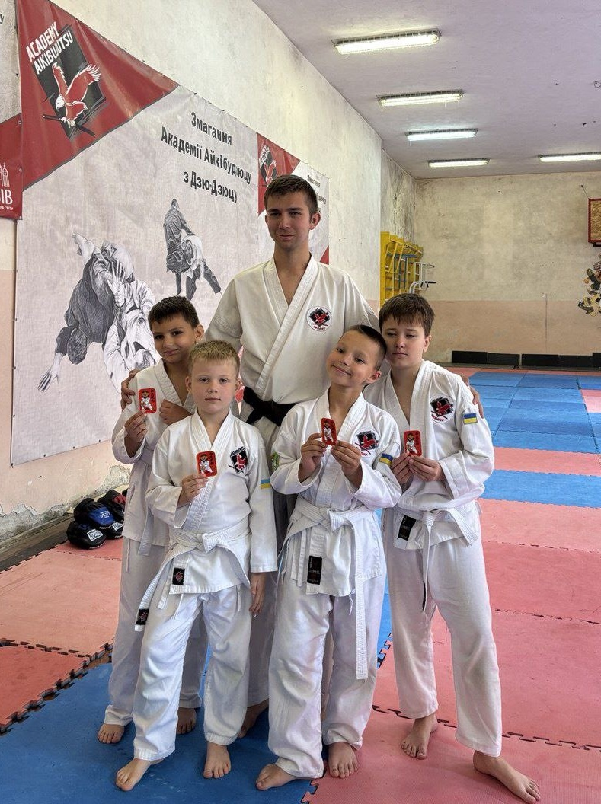
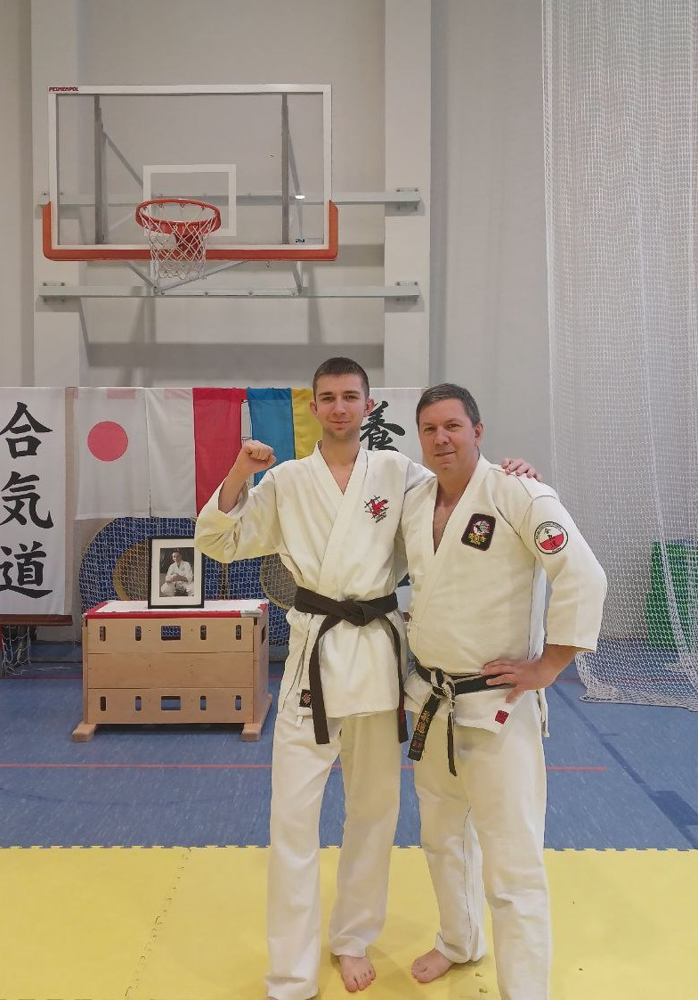
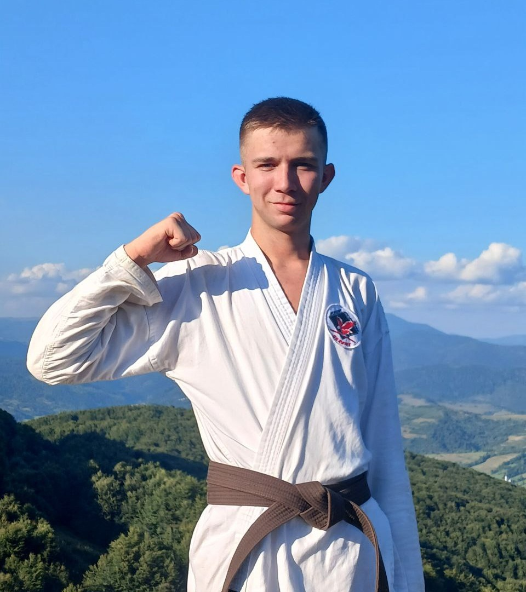

На головну
Айкідо - Шлях Гармонії
Тренерська діяльність, досягнення та філософія мистецтва
2+
Років досвіду
15+
Учнів навчено
9
Сертифікатів
250+
Тренувань проведено
Мій шлях в айкідо
10-й кю (Білий пояс)
2011 - Початок шляху
3-й кю (Коричневий поям)
2023 - Початок викладання
2-й кю (Коричневий пояс)
2024 - Підвищення кваліфікації
1-й кю (Коричневий пояс)
2025 - Підвищення кваліфікації
1-й дан (Чорний пояс)
2026 - майстерність

Екзаменаційний процес
Укемі
Те ходокі

Екзаменаційний процес
Партер
Кіхон

Участь у семінарах

Спеціалізація технік
Каторі
Кіхон Ваза